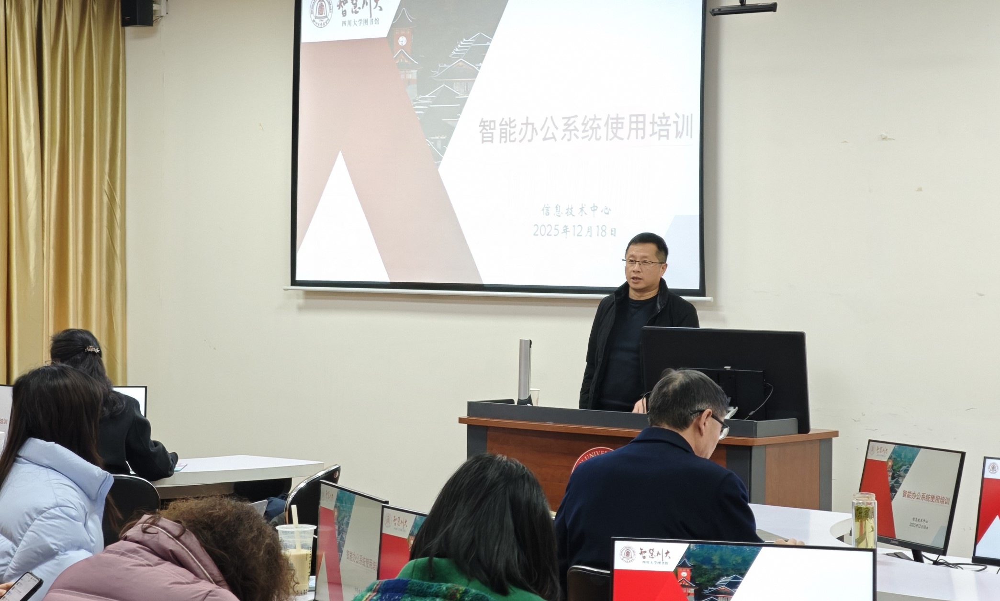

学院通知 · 教学通知
智能办公启新程：图书馆举行智能办公系统培训会
发布时间：2025-12-19 14:10:47
12月18日下午，图书馆智能办公系统培训会在工学图书馆202智慧教室举行。图书馆领导班子成员、各中心（室）主任和副主任以及相关老师参加会议，会议由图书馆副馆长张盛强主持。 张盛强副馆长首先对智能办公系统（一期）的建设背景、目标及整体建设情况进行了简要介绍，参会人员对办公系统有了进一步的认识。随后，信息技术中心副主任邵云梦围绕“流程智能流转，以数据交互替代馆员跑腿，构建便捷化服务与全程可回溯的协同管理新生态”这一核心目标，从办公痛点剖析、业务流转优化，到单点突破策略、管理生态重构等多个维度，通过讲解与现场演示相结合的方式，为大家进行了全方位、深层次的培训。与会人员立足自身业务与管理需求，结合智能办公系统的技术特性，积极踊跃讨论，为系统的后续优化提供了宝贵意见。 此次培训会的举办，让参会人员对智能办公系统的操作运用有了更为清晰的认识，深刻感受到了系统在办公便捷性、智慧性和高效性方面的优势。系统不仅能有效节约办公成本，更能提升老师们的办公幸福感，为图书馆的智能化管理与服务发展注入新的活力。
